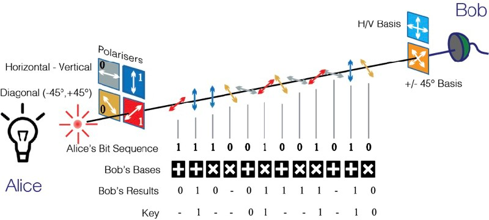

Quantum cryptography is a secure method of transmitting information using quantum mechanics. This technology uses the principles of quantum physics to ensure that any attempts to eavesdrop on the communication will be detected. In classical cryptography, the security of messages is based on mathematical algorithms that are difficult to solve. However, quantum cryptography uses the principles of physics and mathematics to provide a method of encryption that is virtually unbreakable. Quantum cryptography is a highly advanced field that is still in its infancy. It is based on the principles of quantum mechanics, which is a branch of physics that deals with the behavior of matter and energy on the scale of atoms and subatomic particles. In quantum cryptography, a sender sends a random stream of photons to the receiver. The photons can be in several states simultaneously. The receiver measures the photons, and the sender sends the key that is generated from the measurements. This key is then used to encrypt the message. Since any eavesdropper will disturb the photons, the receiver will detect this disturbance, and the communication will be terminated. Quantum cryptography has several advantages over classical cryptography. It is not susceptible to any mathematical attacks, and any attempts to eavesdrop on the communication will be detected. Additionally, it is also possible to detect the presence of any third party who is attempting to eavesdrop on the communication. In conclusion, quantum cryptography is a highly secure method of transmitting information. It has the potential to revolutionize the field of cryptography and provide a more secure way of transmitting information. As research in quantum mechanics and quantum computing continues to advance, it is likely that quantum cryptography will become even more secure and widely used in the future.
One of the main benefits of quantum cryptography is its ability to provide unconditional security, which means that it is impossible for an attacker to break the encryption. This is because the encryption is based on the principles of quantum mechanics, which are fundamentally different from classical physics. Another benefit of quantum cryptography is its ability to detect any attempts to eavesdrop on the communication. This is because any disturbance to the photons being transmitted will cause a change in their state, which can be detected by the receiver. This makes it virtually impossible for an attacker to intercept the message without being detected. In addition to its security benefits, quantum cryptography also has potential applications in other areas such as quantum computing, quantum teleportation, and quantum key distribution. These applications could have significant implications for fields such as finance, healthcare, and national security.
Despite its potential benefits, quantum cryptography is still a relatively new and complex technology. It requires specialized equipment and expertise, which can make it expensive and difficult to implement. Additionally, the technology is still being developed and improved, which means that it is not yet widely available or reliable.
